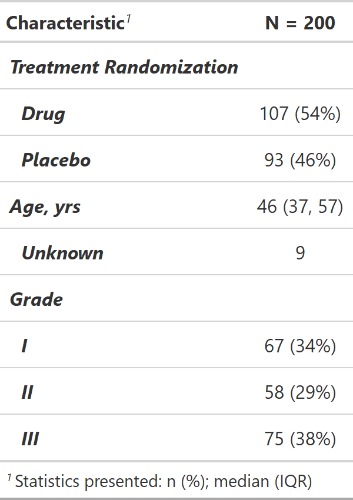

| bold_italicize_labels_levels {gtsummary} | R Documentation |
Bold or Italicize labels or levels in gtsummary tables
bold_labels(x) bold_levels(x) italicize_labels(x) italicize_levels(x)
x |
Object created using gtsummary functions |
Functions return the same class of gtsummary object supplied
bold_labels: Bold labels in gtsummary tables
bold_levels: Bold levels in gtsummary tables
italicize_labels: Italicize labels in gtsummary tables
italicize_levels: Italicize levels in gtsummary tables

Daniel D. Sjoberg
Other tbl_summary tools:
add_n(),
add_overall(),
add_p(),
add_q.tbl_summary(),
add_stat_label(),
bold_p.tbl_summary(),
inline_text.tbl_summary(),
modify_header(),
sort_p.tbl_summary(),
tbl_merge(),
tbl_stack(),
tbl_summary()
Other tbl_regression tools:
add_global_p.tbl_regression(),
add_nevent.tbl_regression(),
bold_p.tbl_regression(),
bold_p.tbl_stack(),
combine_terms(),
inline_text.tbl_regression(),
modify_header(),
sort_p.tbl_regression(),
tbl_merge(),
tbl_regression(),
tbl_stack()
Other tbl_uvregression tools:
add_global_p.tbl_uvregression(),
add_nevent.tbl_uvregression(),
add_q.tbl_uvregression(),
bold_p.tbl_stack(),
bold_p.tbl_uvregression(),
inline_text.tbl_uvregression(),
modify_header(),
sort_p.tbl_uvregression(),
tbl_merge(),
tbl_stack(),
tbl_uvregression()
tbl_bold_ital_ex <-
trial[c("trt", "age", "grade")] %>%
tbl_summary() %>%
bold_labels() %>%
bold_levels() %>%
italicize_labels() %>%
italicize_levels()